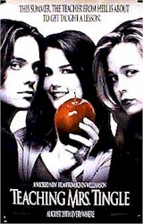
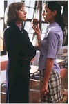
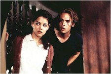

Contents | Features | Reviews | Books | Archives | Store |
 |
|
| Movie Credits | Buy It! |
Teaching Mrs. Tingle
Review by
Cynthia Fuchs
Posted 20 August 1999
|  |
Written and Directed by Kevin Williamson Starring Marisa Coughlan, Vivica A. Fox, Katie Holmes, Michael McKean, Helen Mirren, Molly Ringwald, Liz Stauber, Jeffrey Tambor, Lesley Ann Warren, Barry Watson, and John Patrick White |
Imagine
what Kevin Williamson sees when he surveys his domain. As the much-in-demand
writer of the Screams (number three is on the way), I Know What You
Did Last Summer, and the WB's hugely popular Dawson's Creek, he would
seem to have before him a vast space of Yes, a realm rife with money and talent
and hope and consumption. Everyone wants him. Or more precisely, everyone wants
to have a piece of his very profitable action.
While
it may be that this 34-year-old has a limited number of ideas that will seem
relevant to today's teenagers, his peers -- those ex-teens who handle the money
-- think he can do no wrong, which means that he has a lot of room, for the
moment at least, to explore this world of his own making. So far, he seems to
respect, accommodate, and even, on occasion, defer to the values and
perspectives, the angsts and delights, of his primary audience. He celebrates
their ordinariness and their exceptionalness, their basic pluck in mundane and
strange situations. Consider the Screamers or Dawson and Pacey and Joey: they're
all pleasant, attractive, reassuring kids who talk and brood and care too much
about those things that tend to perplex more than a few adolescents, then and
now.
Simultaneously
remembered and projected, this teen world is a bit like a ride at Disneyland,
fantastic, fun, and small. It is -- unsurprisingly, I suppose -- a very white,
middle class, suburban one. If the neighborhood around the Creek is generally
non-violent and mundane, the horror movies clarify the cultural issues, the
stuff that's really at stake (as most horror movies do). This makes it
unthreatening, easy for white advertisers to imagine selling, easy for white
teenagers to consume. It's romantic and improved over the real thing,
consummately consumable. But it's also full of fearfulness and monsters, usually
in the form of adults.
For all
the girls in Williamson's horror world -- Neve Campbell, Jennifer Love Hewitt,
even, once Brandy -- it's a place built for boys, where the most awful threats
have to do with sex and gendering processes, those teen rituals where you learn
to be men and women. And of course, the scariest notions have to do with
feminizing, specifically, sex that is violent or violence that is sexed:
penetration by knives, fish hooks, and now, in Teaching Mrs. Tingle, a
crossbow.
Reportedly,
Williamson wrote the Teaching Mrs. Tingle script years ago, when he first
moved from New Bean, North Carolina to LA, land of very. Based on an
ultra-bitchy high school teacher he once knew -- and, presumably, resembling a
teacher everyone once knew -- Mrs. T. is a monster of awful proportions, able to
thwart or secure a student's future with a single stoke in her grade book.
The
danger posed by such singular power revisit themes from last year's quite
brilliant The Faculty (written by Williamson and directed by Robert
Rodriguez, who has a sure and slickly cynical touch). In that film, the teachers
were literally possessed by alien parasites from another planet,
body-snatchers-style. In Teaching Mrs. Tingle (originally titled Killing
Mrs. Tingle, and renamed after the Columbine shootings for obvious reasons)
the threat is more conventional, less spectacular.
Though
she is not from outer space and she's not equipped with literal tentacles or
nifty special effects, Mrs. T. (Helen Mirren) is alien enough to her students:
she wears crisp suits and matching sensible pumps. She glowers perpetually, she
hates her life, and therefore, she hates her students as well. Or at least this
would be the view of the students, who are, of course, Williamson's central
concern, as protagonists and consumers. Mrs. T. embodies a banal evil: she
deliberately damages her students emotionally and materially because she can. Or
more precisely, she flunks them for aspiring to surpass her own desperate,
go-nowhere small town existence.
With
Mrs. Tingle's arc so clearly in place -- she will be taught a lesson -- the rest
of the plot follows a predictable but also perverse course. Immediately, she's
out to get Leigh Ann Watson (Katie Holmes, so far best known as Dawson's desired
object Joey). Grandsboro High senior Leigh Ann is painfully perfect, daughter of
a hardworking and plastic-name-tagged waitress Faye (Lesley Ann Warren). Though
her mom smokes and drinks too much, Leigh Ann is the most excellent daughter
imaginable. Earnest, dedicated, and up for a college scholarship if only she can
get an A in history class, she cleans up after her mother and manages her own
busy high school class schedule. Because Leigh Ann's motive for grade-grubbing
is so patently noble - to provide her depressed mother with a vicarious ticket
out of town - she ironically has nowhere to go as a character: she's not going
to learn anything, she's not going to change.
When
Mrs. Tingle unfairly accuses her of cheating, Leigh Ann goes to the teacher's
creepy Victorian house at night to plead her case (surely an unlikely scenario,
but who's counting?). She's accompanied by her fellow accusee and best friend,
Jo Lynn (Marisa Coughlan), and the class derelict and beautiful boy-object Luke
(Barry Watson). The confrontation goes badly, Jo Lynn picks up a crossbow
someone has made for a class project, and poof! Mrs. Tingle ends up spending
much of the film in her mannish silk pajamas, tied to her bedposts, while the
kids ponder their suddenly dire predicament.
Eve
Tingle is easy to dislike, stereotypical, two-dimensional, monotonous: she's the
first woman, the last woman, the woman who alarms and irritates people who used
to be male students. Apparently what makes her especially horrifying in
Williamson's memory/mind is her inappropriate masculinity: she berates and
cajoles the kids, brutally and unemotionally. Along with her supposed masculine
threat, however, she also poses an ambiguous one, as she is also quickly
demasculinized by her illicit affair with an oafish coach (Jeffrey Tambor) who
shares with her some especially corny pet names for his penis.
Despite
or perhaps because if all this easy targeting, the script becomes increasingly
unwieldy and bizarre. It's not so much that it doesn't make sense -- the story
manages a kind of internal logic -- but the characters seem to fall into
movie-like poses more than they follow their own possibilities: save for Jo
Lynn's weird-ass but oddly likeable rendition of Linda Blair's demonic
bed-flopping, the kids seem to flounder between a tedious lack of imagination
(jealous in-fighting or sexual acting out when you expect it, that is, when
their situation seems most precarious) and outrageous plot conveniences (the
coach seems unable to tell the difference between her and budding actress Jo
Lynn when he's wearing a blindfold).
This
general flatness undermines what the movie does almost well, namely, take high
school anxieties about omnipotent teachers seriously. Make that half-seriously:
the teacher is as vicious as she would seem to the average high schooler, but
her motives, once revealed, are fatuous predictable. The monstrosity that makes
the story interesting becomes inane.
The
kids' trajectories are even more pathetic. They spend the bulk of their screen
time doggedly discussing their options and non-options (in a way that -- oh! --
recalls Dawson's Creek, but there, such talk is quite charming). But
Leigh Ann, Jo Lynn, and Luke are left with no options. The script bails on them.
They and their audience deserve better.
Contents | Features | Reviews
| Books | Archives | Store
Copyright © 1999 by Nitrate Productions, Inc. All
Rights Reserved.